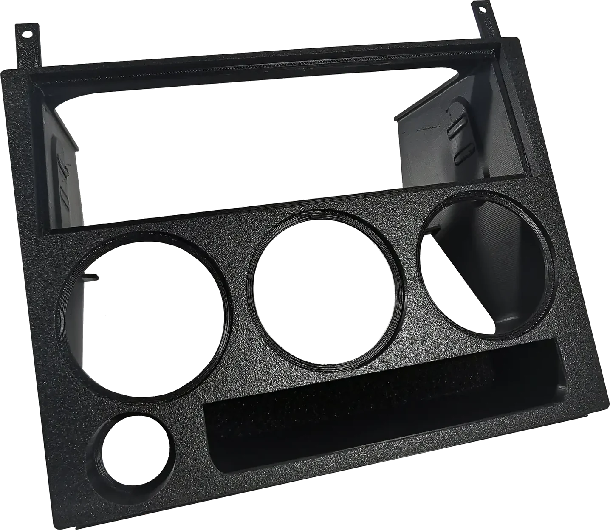
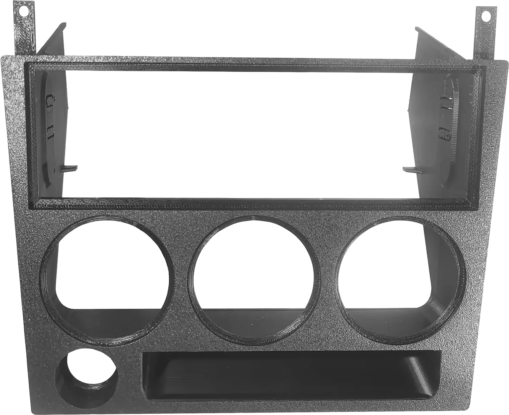
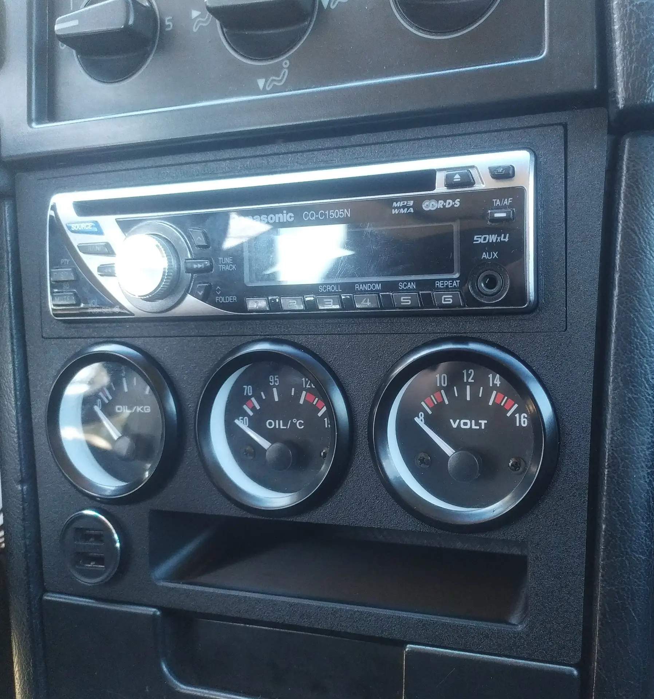

Volvo 740 · 940 · środek deski rozdzielczej
Ramka środkowa
Środek Twojej deski rozdzielczej na nowo. Radio, trzy wskaźniki, zapalniczka lub USB i popielniczka w jednej, idealnie spasowanej ramce.
Gdzie się montuje
Na samym środku deski rozdzielczej.
- Ramka środkowa na środku deski rozdzielczej, w miejscu starego panelu.
Wszystko na swoim miejscu
Jedna ramka. Cztery zadania.

- Miejsce na 1DINDowolne standardowe urządzenie 1DIN, np. radio.
- Trzy otwory na wskaźniki 52 mmNa standardowe wskaźniki 52 mm, kupowane osobno. Wpust Ø58 mm od przodu.
- Zapalniczka lub USBOryginalna zapalniczka albo gniazdo USB.
- Wnęka na popielniczkęStandardowa popielniczka pasuje idealnie, a bezpieczniki pozostają dostępne.
W aucie
Wygląda, jakby zawsze tam była.
Na zdjęciu z radiem 1DIN, trzema wskaźnikami 52 mm i podwójnym gniazdem USB. Nie są w zestawie: ramka pomieści te, które sam wybierzesz.

Dlaczego pasuje
Zrobiona do tej deski. Tylko do tej.
Bez zmian w aucie
W pełni kompatybilna z 740 i 940. Nic do cięcia ani przerabiania.
Teksturowany front
Teksturowana powierzchnia dobrze komponuje się z kolorem wnętrza.
Druk 3D
Wykonana w technologii druku 3D, kształtem dopasowana do deski 740 i 940.
Idealne spasowanie
Równo licuje z otaczającą deską.
Galeria
Przyjrzyj się bliżej.
Kliknij zdjęcie, aby je powiększyć.


W zestawie
Ramka + instrukcja montażu
Ramka środkowa
Druk 3D, teksturowany front. Pasuje do Volvo 740 i 940.
Szczegółowa instrukcja montażu
Krok po kroku, do samodzielnego montażu.
Nie ma w zestawie: radia ani innego urządzenia 1DIN, trzech wskaźników 52 mm, zapalniczki ani gniazda USB.
- Pasuje do
- Volvo 740 i Volvo 940
- Radio
- Dowolne urządzenie 1DIN
- Wskaźniki
- 3 × 52 mm, wpust Ø58,00 mm
- Gniazdo
- Oryginalna zapalniczka lub USB
- Popielniczka
- Standardowa, bezpieczniki dostępne
- Montaż
- Bez przeróbek, samodzielnie z instrukcją
- Wykonanie
- Druk 3D, teksturowany front
- Cena
- 150 €
Zamówienie
Zamów ramkę środkową
150 € za ramkę ze szczegółową instrukcją montażu. Wykonuje i sprzedaje Maciej Kalinka.
150 €
Chcesz zamówić?
Dane kontaktowe wkrótce.